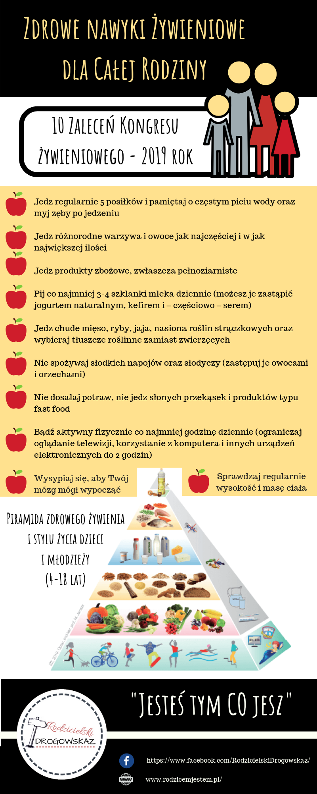

Nawyki żywieniowe i aktywność fizyczna uczniów
Explore Login Upload document Create flashcards × User2 Documents Last activity My documents Saved documents Flashcards Last activity My flashcards Saved flashcards Collections Profile Add to ... Add to collection(s) Add to saved Nauka Biologia Odżywianie
Nawyki żywieniowe i aktywność fizyczna uczniów
advertisement advertisement × Thank you for your participation!Related documents
Czy suplementacja u dzieci powyżej 3. roku życia może być Dr Anna Dybała Zadania intendenta pobierz ZPL - L5 UZASADNIENIE Diapositiva 1 Koszalin, dnia 19 stycznia 2016 r. Wykaz tematów prac Zdrowe odżywianie Zał nr 1 program merytoryczny Download advertisementRandom flashcards
Motywacja w zzl3 Cards • ypy
Prace Magisterskie2 Cards • Pisanie PRAC
Create flashcardsAdd this document to collection(s)
You can add this document to your study collection(s)
Sign in Available only to authorized usersAdd this document to saved
You can add this document to your saved list
Sign in Available only to authorized usersProducts
Documents FlashcardsSupport
Report © 2013-2020 StudyLib all other trademarks and copyrights are the property of their respective owners DMCAMake a suggestion
Did you find mistakes in interface or texts? Or do you know how to improve StudyLib UI? Feel free to send suggestions. It's very important for us!
Add feedbackSuggest us how to improve StudyLib
(For complaints, use another form )
